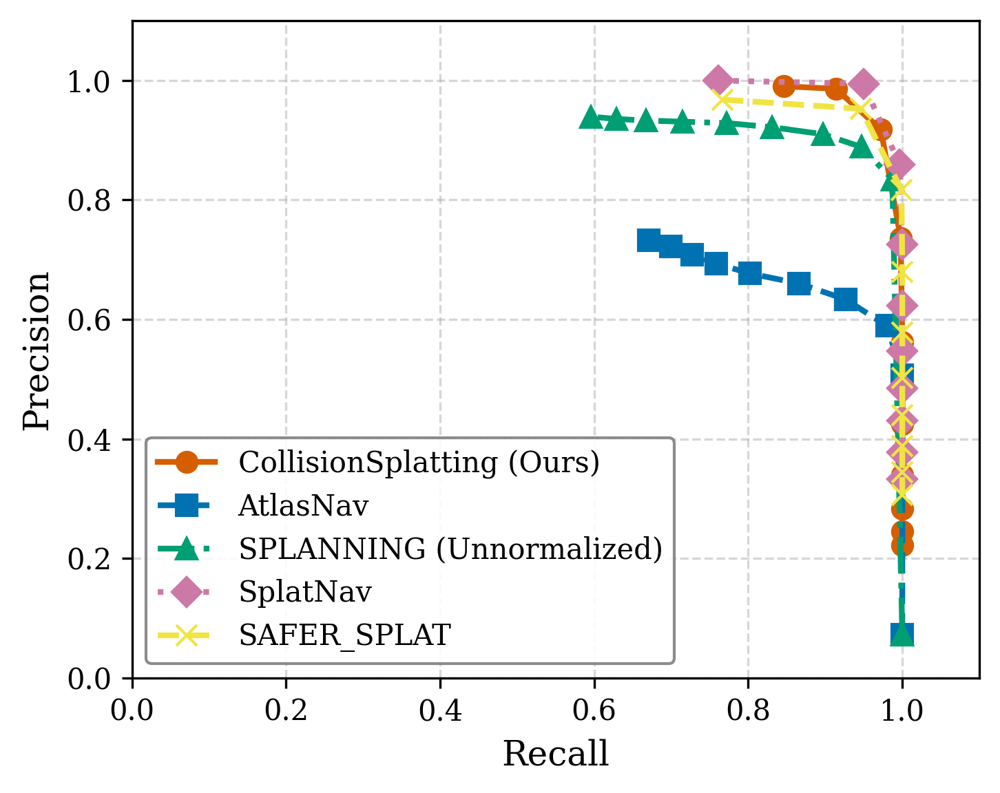
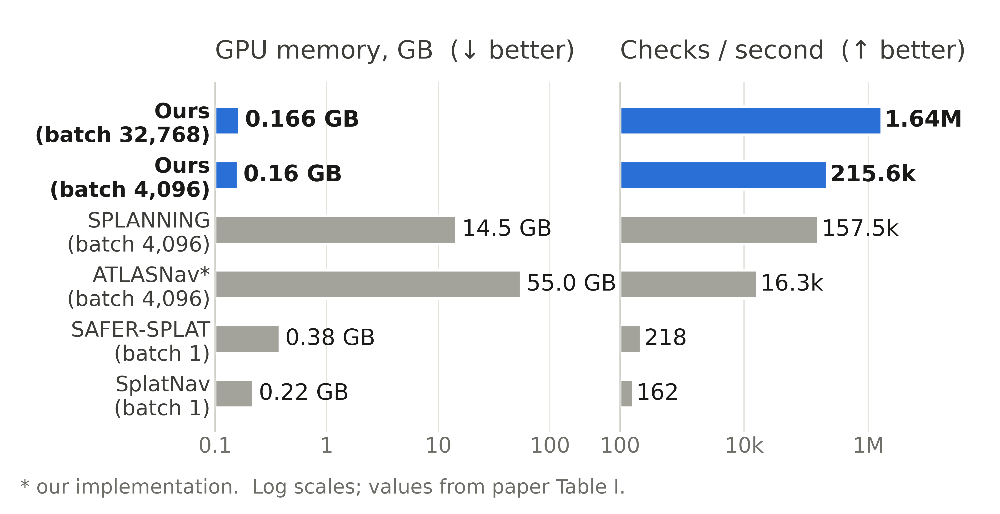
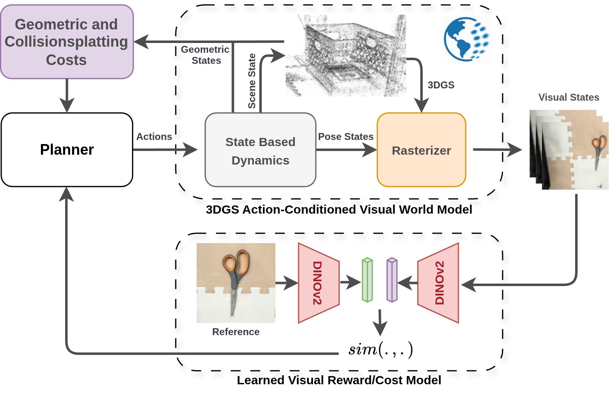
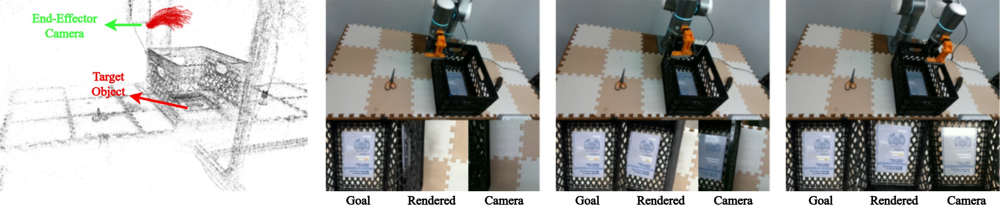
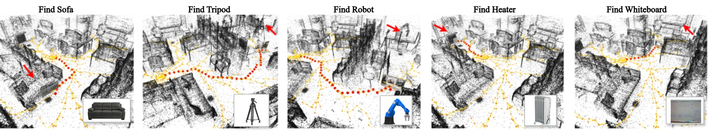
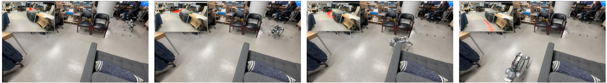

TL;DR
CollisionSplatting is a fast, memory-light GPU collision kernel with tunable conservatism that enables collision-aware planning and real-time control directly on standard 3DGS scenes — from SfM/SLAM captures to generative 3D worlds — with no mesh conversion required.
Abstract
Incorporating dense visual information into motion planning remains challenging, as geometric planners rely on abstracted scene representations that discard visual richness, while learned visual models often lack geometric interpretability and computational efficiency. This paper introduces CollisionSplatting, a simple, modular, GPU-accelerated, probability-inspired distance metric with tunable conservatism that operates directly on standard 3D Gaussian Splatting (3DGS) scenes. When combined with learned image-conditioned reward functions, this metric enables joint geometric and visual planning by unifying collision-aware costs with image-space objectives. We integrate the metric into GPU-accelerated Model Predictive Path Integral (MPPI) and Rapidly-Exploring Random Tree (RRT) planners, and show on-par or better collision-classification performance compared to representative baselines while achieving substantially higher collision-checking throughput and significantly lower VRAM usage. Finally, we demonstrate the effectiveness of our metric in real-world vision-guided navigation and manipulation tasks, highlighting 3DGS as a practical bridge between rich perception and real-time motion planning.
Plan on the splats, not on a mesh
Gaussian splats have become how we capture, and increasingly generate, photorealistic 3D worlds. Yet simulators and planners still attach a separate collision mesh to them, built from LiDAR, from artists' models, or as a coarse approximation. Phone captures and generated worlds often have none of these, and a mesh throws away how uncertain each part of the reconstruction is.
Needs extra sensors or authoring; lossy; no notion of uncertainty.
Raw splats in, distances and costs out, in one GPU kernel.
Treat every splat as an uncertain obstacle
The robot is a set of ellipsoids. For each nearby splat, the kernel measures how deep the splat's centre sits inside a robot link, then propagates the splat's covariance through that distance to the first order. Subtracting \(n_\sigma\) standard deviations gives a conservative distance:
Distances are gathered with a spatial hash grid and folded into a streaming soft-minimum, so every query keeps a constant amount of state and no query-by-splat tensor is ever stored. \(n_\sigma = 0\) reduces to a plain point-cloud check.
Drag the cyan robot (or focus it and use the arrow keys). The violet splat has a long axis three times its short one (rings at 1σ and 2σ). The dashed circle is the keep-out region of a point obstacle; the shaded region is where the robot's centre must not go at the chosen \(n_\sigma\). It grows most along the splat's long axis, where the reconstruction is least certain.
One knob for caution
Raising \(n_\sigma\) inflates splats in proportion to their uncertainty. With the same start, goal and random seed on 3DGS Stonehenge, the planner slips through a narrow gap at \(n_\sigma = 0\); at \(n_\sigma = 2\) the gap closes and it goes around.
The same mechanism makes the robot automatically more careful where the reconstruction is poor. Poorly observed regions are represented by larger Gaussians, which carry a larger \(\sigma\).
As accurate as the baselines, orders of magnitude cheaper
We compare against Splat-Nav, SAFER-Splat, ATLASNav and SPLANNING on a grid of collision queries in the Stonehenge scene (about 200k splats), with a mesh as ground truth. CollisionSplatting classifies collisions on par with the baselines and better than ATLASNav, while using 0.16 GB of GPU memory where the batched baselines need 14.5 to 55 GB, and running about 1.6 million checks per second on one GPU.


Image goals and collisions in one MPPI loop
Because the scene stays a renderable 3DGS, each sampled trajectory can be scored by what the robot would see. We render the camera view at the end of every MPPI rollout and compare DINOv2 features with a goal image, while CollisionSplatting adds the collision cost in the same batch.

On the real robots, the Flexiv arm runs this MPPI at 5 Hz, and a Go2 quadruped finds an object from an image by searching a batched RRT tree for the most similar rendered view, then drives there with collision-aware MPPI.



Works on any standard 3DGS scene
The kernel reads the per-splat parameters every 3DGS exporter writes, so the same code runs on SfM captures, public datasets and generative world models. These worlds are raw exports from World Labs' Marble, planned on without retraining.
Try it
The code is a pip-installable Python package with a batched RRT, an MPPI planner, URDF kinematics for ellipsoid robots, and examples that download public Marble worlds.
git clone https://github.com/machines-in-motion/CollisionSplatting.git
cd CollisionSplatting && pip install -e ".[examples]"
python examples/02_rrt_marble.pyCitation
@inproceedings{khorrambakht2026collisionsplatting,
title = {CollisionSplatting: Collision-Aware Motion Planning in 3DGS Scenes
with Image-Conditioned Objectives and Adjustable Conservatism},
author = {Khorrambakht, Rooholla and Ortiz-Haro, Joaquim and
Weiss, Stephan and Righetti, Ludovic},
booktitle = {IEEE/RSJ International Conference on Intelligent Robots and Systems (IROS)},
year = {2026}
}